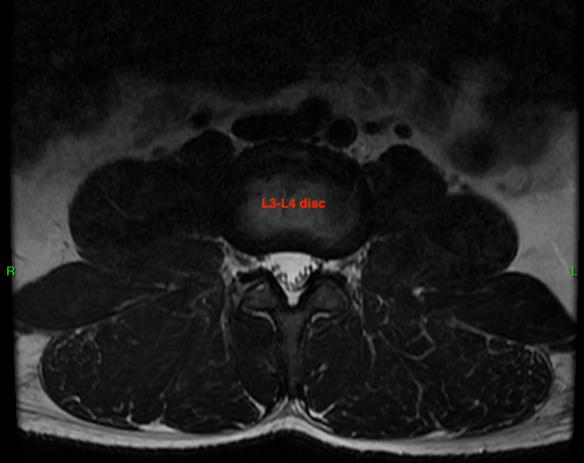
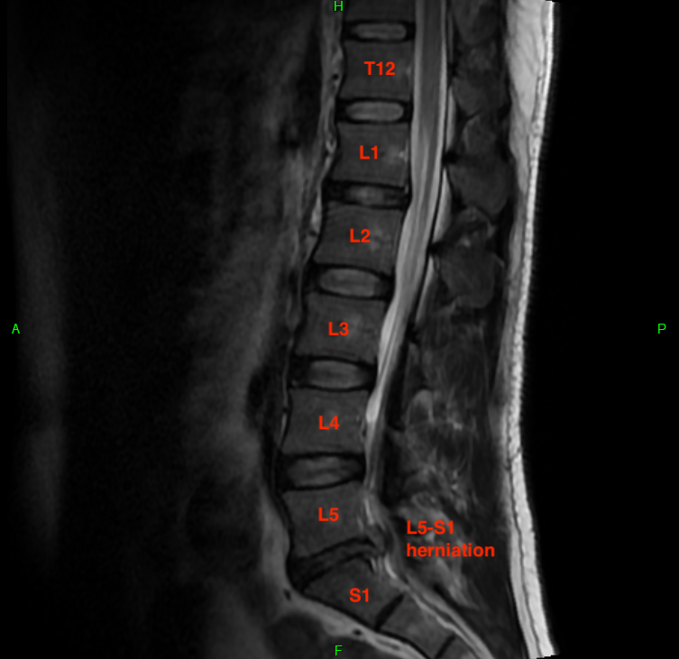
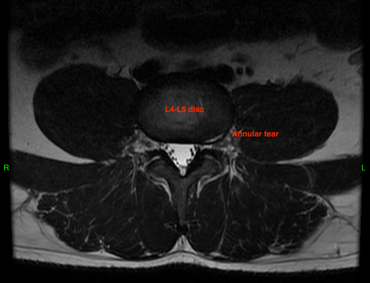
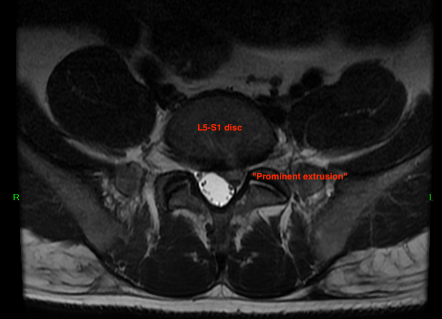
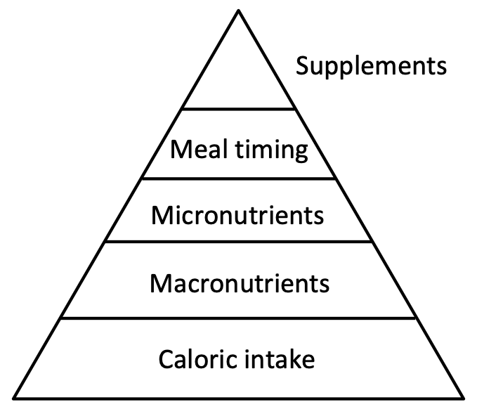

The goal of this post is to document everything that I found useful both before and after my spine surgery. Be warned; this is a very long post and I recommend that interested readers consume it in manageable pieces. Different readers may be interested in different parts of the blog. For this reason, I've built a navigable "table of contents" below.
Table of Contents
Contrary to what you've heard on various broscience YouTube channels or intellectual dark web podcasts, medical expertise is still a thing. This blog details my journey through one of life's most soul-crushing injuries. I use correct medical terminology to the best of my ability given my limited self-education; this doesn't mean I'm precisely correct or that I'm qualified to diagnose anything. Seek a qualified medical practitioner for a diagnosis of any ailment from which you may be suffering. The advice I give worked well for me and is probably worth your consideration, but it may not work for you.
For those with limited time or who simply want the bottom line up front, this section summarizes the key points of the blog post in a few paragraphs. If you find this section unsatisfying or incomplete, then read the whole post.
I herniated my L5/S1 spinal disc doing some stretches at home after some irresponsible workouts in the gym during the summer of 2021. Five weeks after a follow-on injury caused numbness and weakness throughout my glute, hamstring, and calf on the left side, I had a microdiscectomy. There were no complications from the procedure and I went home that day.
My recovery was largely linear and trending positive most days. I took my first shower 4 days post-op and was walking 4-5 miles a day, albeit slowly, by the end of the first week. I was medically cleared for "all activities" at the 6 week mark, but continued to follow a conservative recovery plan, slowly introducing core stabilization exercises like the Pallof press and Foundation Training for weeks thereafter.
My drug use was limited to 400 mg Ibuprofen taken once a day at bedtime to help ensure a restful sleep. The only exception is that I took this same dosage in the morning 2 days post-op as the anesthesia wore off. That was my worst day and it was nowhere near as bad as I expected. Although I was prescribed narcotics and had them filled, I never took them. This came at the advice of the PA who recommended I only take them if necessary, helping to preserve both my mental and physical health.
I was never prescribed physical therapy; not before the surgery nor after it. When a patient has neurological weaknesses that are progressively worsening, as I did, there isn't time to undertake a multi-month PT plan to manage pain and rehabilitate occupational tasks. If your herniation symptoms are limited to pain but you can still feel and use your legs, you'll probably have to go through PT followed by epidural steroid injections (ESI). I, perhaps fortunately, skipped all these steps. The downside is that, even months later, my affected leg remains weakened and perhaps will be forever.
If you're not already, start eating right. Stop smoking and drinking. Giving your body the best chance to heal after surgery will have lifelong benefits. This far outweights the instant gratification of a candy bar or cigarette. Drink more water, aim for 8 hours of sleep, and get up to move frequently. The last thing you need is scar tissue replacing that herniation due to inactivity immediately after surgery.
Prior to surgery, to get yourself a pair of walking shoes and break them in. You'll be walking a lot. Also, buy two (not one) trigger-operated grabbers to help pick up things from the floor or other hard to reach places. Having two is useful in case you drop one, your kids commandeer one, or you have a lot of things to pick up at once (dual grabbers is actually fun). I'd also recommend getting some exercise bands and a yoga mat as these will becomes staples of your recovery routine, especially if you are not sent to physical therapy.
I graduated college in the summer of 2008, and like wildfire, a new idea sprung to mind. I had been very fit (and injury free) all through college at a lean 160 lbs (72.5 kg) by exercising twice a day. This included tons of cardio via running, swimming, rowing, and occasionally, elliptical and stair master machines. I also lifted weights and did various military-relevant exercises as I was an NCO in the US Marine Corps infantry (reserves) at the time. My post-college idea was to abandon all this and bulk up; tons of forced eating, heavy compound lifts, and a mountain of sleep. Not a bad goal.
The problem is that I didn't hire a good coach and had a number of anatomical deficiencies: anterior pelvic tilt, weak glutes, unstable core (but great looking abdominals), and more. When the body carries an axial (top-down) load, say across the shoulders in a back squat, it compreses the intervertebral discs (IVD) between your vertebrae (the bones in your spine). Our bodies were built for this, but only when the spine maintains is natural curvature under load. When the weight causes this curvature to malform (an indication of a weak core), it can have severe impacts. Fortunately, at 22, poor form while doing heavy deadlifts and squats wasn't the immediate, acute cause of my first IVD herniation.
I remember it vividly. It was August 2008 and I was in my bedroom stretching. It's a stretch I had been doing for years; the one where you sit on your butt, abduct (move away from the body's centerline) the hips and extend your knees in front of you, then reach your hands towards each foot. It's generally a hamstring stretch that can be extended to most of the posterior chain if you manually pull your foot into dorsiflexion using your hand. For years, the stretch caused no problems and I was very flexible.
However, by this point, I had been lifting "heavy" without a coach, with a weak core, with a misaligned pelvis, and probably many more dysfunctions. It wasn't audibly loud or painful, but I heard a small pop and felt a rush of fire shoot down my leg. It only hurt for 10 seconds, but the result was catastrophic. I was unable to dorsiflex my left foot at all. I suffered a complete motor control breakdown. This made it very hard to walk since my foot would slap down on the ground, causing "foot drop". Imagine being unable to walk on your heels; that was me.
Some anatomy first. Like a chicken wing (or a human lower arm), there are two large bones in the human lower leg. The bigger tibia is the "shin" bone in front, and the smaller fibula is buried deeper in the leg. The tibialis anterior and peroneus longus muscles are responsible for dorsiflexion (lifting foot up) and pronation (turning foot outwards), respectively, and were completely severed from my brain's control. There are many kinds of nerves, too, and in addition to severe motor nerve damage, the skin around these muscles was numb. My sensory nerves were likewise damaged, which is unsurprising, as the motor and sensory nerge components are bundled together for transport from the spinal cord.
Upon seeing a doctor, I was diagnosed with an L4-L5 (technically just L4, since all non-vertebral components use the name of the vertebra above it) disc herniation and was prescribed some back extension exercises. I was 22 years old and terrified, especially because I had just been commissioned as a Marine Officer and was about to attend a grueling training course a few months later. Miraculously, I made a full recovery within a few weeks; no X-ray, no MRI, no surgery, and all I did was some at-home physiotherapy and maybe some cardio at the gym. I can barely remember it. All that remains is a bit of trace numbness that hasn't impacted my athletic performance or quality of life.
Although I've had various bouts of back pain in the 13 years since (including a trip to the emergency room in late 2014), my IVDs didn't give me any trouble. By 2010, I was easily deadlifting more than 400 lbs (181.4 kg) at a body weight of about 190 lbs (86.2 kg). Not super impressive, but I say this to illustrate I was fully recovered from my previous IVD injury. This is on top of all the military training required; carrying body armor, heavy backpacks, weapons, sleeping on the ground, etc.
Fast-forward to May 2021. After the global scourge of COVID-19, vaccines in the US were now available to the general public. Upon receiving my second dose (and after the 2 week waiting period), I went back to the gym. I had stayed moderately fit doing home workouts for the 15 months prior, but I did miss the feel of metal in my hands. Ironically, the home workouts I did were exactly the kind of core stability workouts I should have kept doing while ramping up my gym routine. I foolishly abandoned them instead.
Keep in mind the mental anguish many of us suffered during COVID-19. My wife and I literally have zero friends or family in the state of Maryland. We are completely isolated with no support system. When daycare calls and says we have to pick up a sick kid, that's a real hassle. Daycare doing this for months on end and burdening two full-time working parents while raising two ultra-destructive kids was the penultimate stress test. Doubtless my wife and I shaved years off our life from that episode; we both look and feel 10 years older now.
This stress was further compounded by two enormous work-related events. With my full-time job, I was assigned to a dumpster fire project that needed a strong leader capable of demonstrating command presence and technical expertise with precision while navigating the corporate politics of the customer. I was honored to have been selected, but it was an enormous burden for my body and mind. It included many late-night migrations followed by next-morning troubleshooting sessions, weekend migrations, and untold quantities of unreasonable requests from the customer.
In addition, I operate a small side-business selling technical training courses, both live and video-on-demand, to various customers. One customer asked me to create a full learning path (a series of consecutive courses) on a complex topic. This kind of task would take most authors a year to complete; I finished it in about 10 weeks. Both this and the unruly full-time customer work occurred at the same time in roughly the same 3 month period from early March to late May 2021. I continued to support the work customer for another month, but the conflagration had cooled down into a smoldering ash heap ... which was managable.
Working out is usually a great way to burn off stress. I was carrying so much of it by this point: a year's worth from 2020, which included a new baby plus the pandemic, extreme work stress, declining mental health from always running my mind and body at 100%, and more. Unfortunately, the gym is what broke me, but in a similar way to 2008. I was doing weighted side bends (imagine holding a dumbbell in one hand, then bending laterally in that direction to train your core) and my whole torso hurt the next day. I didn't have any peripheralization; that is to say, the pain was local to my torso and did not radiate into my extremities, so I knew it wasn't that serious.
Apparently, I didn't learn a thing from 2008. One day in June 2021, I remember putting my older daughter to bed. I was in her room telling her a bed time story and doing the same stretch that caused an IVD herniation in my past to try and loosen my body. After exiting, the stretch, I didn't feel any immediate pain, but remember lying down and feeling the throb of inflammation only on the left side of my low back. Initially, I thought I had torn apart some muscle adhesions (a good thing) because there wasn't any pain. I continued to train normally for a few weeks until I noticed something was wrong.
It was subtle, but I noticed that any twisting or flexing (forward bending) of my lumbar (lower) spine caused some referral pain down the back of my glute and upper left on the left side. I knew it was another IVD herniation, but since the pain was above the knee, I figured it wasn't as serious. I was probably right about that, and even better, once I discovered this I went into what I'll call "90% serious mode" about the injury. I stopped going to the gym and focused on long walks, mental decompression, getting more (and better) sleep, and drinking more water. My diet had always been pretty good and I didn't see a need to optimize it. This discovery occurred in early July.
After about 3 weeks, I was feeling better. I still could not pass the straight leg raise test (imagine being seated and trying to fully extend your knee without pain), so I knew it was still injured. However, I was able to do various hip-hinging exercises and poses to strengthen my core. Deep abdominal bracing breaths didn't hurt either. Basically, I only felt pain when I wanted to, which was a totally acceptable way to live for the next month or two until I healed.
Then, on 24 July, everything changed. I was stretching my right quadripceps muscle in an effort to pull my pelvis back neutral. I figured, if my body is broken and I can't lift heavy, I can at least correct my anterior pelvic tilt. Something went wrong; maybe I didn't contract my core hard enough, maybe I twisted the wrong way, maybe I flexed my lumbar spine ... I'll never know. I felt the sharp pinch of acute pain and the immediate referral into my calf and outer foot. I stopped stretching, drank some water, ate a quick dinner, and immediately went to bed.
Waves of pain consumed me that night, and I didn't sleep a wink. There are countless accounts on the Internet of what this pain feels like, and words can't really do it justice. It's just horrible. After visiting urgent care the next day and an orthopedist two days later, it was clear I had an IVD herniation. The orthopedist ordered an MRI which clearly showed the problem. After about a week, I was mostly pain free, but I had a bigger problem; motor weakness and sensory numbness.
You might be thinking "Hey, you had a complete foot drop and you recovered from that! This doesn't sound nearly as bad" and you'd be right. Consider the differences: not only am I 13 years older, but I also burdened with toxic levels of stress. As I write this, I don't have nearly as many stressors making it worse, but stress is like debt. It accumulates until dispersed, and I'm trying to find outlets for it. Also, I never had any imaging done in 2008, so it's impossible to know the extent of the damage. Perhaps the IVD herniation became sequestered (broken fragment disconnected from the IVD) and moved off of the nerve, allowing it to be absorbed by my body without causing damage. This time, I had an extrusion, which describes spillage of IVD internal content that remains connected to the fluid still inside the IVD.
Another quick disclaimer. Never second guess your radiologist or any other healthcare provider who is professionally trained to interpret an MRI. I'm posting these images to illustrate and reinforce, not to contradict or dispute, what the doctors said.
When taking MRIs, it's useful to correlate the sagittal (side) and axial (top) views. Imagine lying down and having a butcher slice you from right to left (sagittal) or from top to bottom (axial). The software that doctors use to examine MRIs is really cool in that you can scroll the mouse wheel on one diagram and it will show you your position on the correlated diagram. My MRI report listed a ton of deficiencies, most of which were minor issues that don't relate to my acute problem. This was the radiologist being diligent.
I want to show three levels for comparison. These are disc-level slices of my L3-L4 IVD, which is healthy. I've drawn cut lines on each image to show you how the slices correlate. These are T2-weighted images, which means water is hypersensitive (bright white). Tissue with high water content shows up as lighter, and you can see my relatively healthy IVDs all have a light center. That's because the nucleus pulposus is about 80% water and is responsible for about 80% of the axial load bearing of the spine. The remaining 20% of axial load is absorbed by the facet joints, which are a pair of hinge-like joints connecting adjacent vertebrae. They "fasten" the spine together and prevent excessive bending and twisting.

In the sagittal image, notice the bright white column just behind the vertebrae. This is the thecal (or dural) sac, which is the protective cavity for the spinal cord and cauda equina. In most adults, the spinal cord originates from the brain and terminates towards the end of the thoracic spine (T12) or around the beginning of the lumbar spine (L1). The spinal cord is quite thick and consumes much of the space inside the thecal sac. Mine ends at T12, so from there on down is the cauda equina, or "horse tail" of nerve endings. The thecal sac is still pretty wide despite only a handful of nerves passing through it, which makes it somewhat tolerant of encroachment from IVD herniations.

This correlates on the axial view. The bright white triangle is the thecal sac and the black dots inside it are the cauda equina nerves. These nerves will exit from the thecal sac and pass through the neural foramen, a hole between two verbebrae. These holes are relatively small, but in a healthy person, there's plenty of space for the nerve roots to pass through without compressive forces.
Moving down to my L4-L5 disc, you'll observe a different situation. As I said earlier, I never had any imaging done during my disc herniation in 2008, but I am reasonably certain it occurred at this level. There's no obvious hernation, but the disc's center (nucleus pulposus) is darker in color than at the L3-L4 level. Darker material has less water content and is a sign of disc degeneration. There's also a small left-side tear in the outer ring (annulus fibrous) which is a series of ligaments that connect adjacenct vertebra and contains the nucleus pulposus. Again, this isn't causing me pain, but could easily become a problem in the future. If you are pain-free and see something like this on your MRI report, take it seriously.

Last, observe my L5-S1 disc. The "S" stands for sacral, and in adults, the sacrum is a triangle shaped bone at the base of the spine. The individual bones (S1, S2, etc.) all fuse together when we are teenagers so the IVDs between them become irrelevant. Notice how my paracentral (off-centered) herniation interferes with the thecal sac (fortunately, there's plenty of space, so my cauda equina has not been crushed) and also the S1 transiting nerve root. This nerve root exits through the thecal sac then continues downward through the sacrum where another pair of foraminal openings exist. As soon as the S1 nerve root exits the thecal sac, it gets compressed by the disc extrusion. Many other nerves within the thecal sac are anatomically displaced as well, although I did not have any associated pain or neurological dysfunction.

On 20 August 2021, I completed my pre-operative check at a local urgent care facility. This was the same place I went the day after the initial injury. I don't have a primary care physician, but if you do, that's where you'll go instead. Being an otherwise healthy person, I did not require a chest x-ray or EKG. My blood was drawn (be sure not to eat beforehand) and my urine was collected. The results of all testing was conveniently posted to an online portal which I briefly reviewed. My knowledge of cardiac and vascular medicine is near-zero and I'm not going to attempt to describe the results ... but there was nothing of serious concern.
Surgery was 31 August 2021 at Medstar Union Memorial hospital in Baltimore. Upon arrival, I was directed into a preparatory room, ordered to remove all clothing, and donned a medical gown. Several nurses arrived to initiate the process, placing compression stockings over my lower legs, checking my vitals, and bringing me warm blankets. Once complete, one nurse remained for another 30 minutes, hooking up my IV ports, asking me medical history questions, and testing me for COVID-19 using the nose swab method. I was also given two Tylenol and two Gabapentin (a nerve pain blocker) pills of unknown dosage.
Once she was finished, my wife was summoned from the waiting area and sat with me until the time of surgery, which I estimate was about one hour away. During this period, four more healthcare providers arrived. First came the surgeon himself. His job is to briefly explain the procedure and confirm that he's operating at the right location. He made a mark on my back using a writing utensil as additional confirmation, which I thought was smart.
Next came the physician's assistance (PA), who spoke to me about the prescription drugs in question. I was prescriped 5mg oxycodone and nothing else. The PA said "If you're in pain, take an over-the-counter NSAID like motrin or ibuprofin. Wait 30 minutes. If the pain does not reach a manageable level, only then should you take the narcotics". I liked this attitude, not only because it confirmed my priors, but because it was a logical progression. I've had some horrific injuries in the past and have never in my life taken a narcotic pain pill. I didn't want to start; I have an addictive personality so I wanted to stay clear if possible.
Third came the anesthesiologist. She once again confirmed the operation and asked about my medical history. She also performed a cursory inspection of my mouth to look for any loose items, such as loose teeth, piercings, etc. She explained that once I was sufficiently drugged up, I'd be intubated to help me breathe. No problems there.
Last, a fellow arrived who described himself as a "neurological monitoring" technician. He asked me to descibe my radiculopathy as precisely as I could. His role was to "protect me from the surgeon" (his words, offered in jest) to minimize any neurological damage. He dry needled me in at least 6 different places, much like an acupuncturist, which I assume added some medical value. I had a few small blotches of dried blood around my wrists and feet upon rising from surgery, but otherwise, no problems from it. Note that this dry needling occurred while I was unconscious, so if you don't like needles, don't worry. You won't be aware of it happening. This may not happen at all with your hospital/surgeon; it seems to be a new thing.
When it was time for surgery, 3 nurses arrived who wheeled me into the operating room. My wife was escorted back to the waiting area. The last thing I remember was the anesthesiologist said "I'm going to give you a little cocktail" as she plugged into my IV port. That's really all I remember. A few hours later, I woke up in the post operative recovery area. Next to me was a patient with a giant bandage over his knee.
I had double vision for about 5 minutes which the attendant nurse said was normal. Once that cleared up, I was mostly clear-headed and chatted amiably with the nurse about topics I cannot recall. My wife was once again summoned and I was served my discharge papers. Many other people have said that walking a short distance and using the restroom were conditions for their release. In my case, I signed the papers, stood up, sat back down in a wheelchair, and was transported to our car. There were no conditions for my release, which seemed odd. Before leaving, the PA appeared again and said my extrusion was about the size of a chewed up piece of Dentyne chewing gum (perhaps 0.5 to 1 mL). He reminded me about his guidance for medication: NSAIDs first, wait 30 minutes, then advance to narcotics only if necessary.
Getting up and down from the wheelchair was a bit difficult, as was getting into the car. My back ached from the surgery but my leg felt alright. When we arrived at home, I was helped inside, ate a small meal, took some Ibuprofen, and promptly went to sleep. It was about 8:30 PM at this point. I slept quite well that night and rose the next morning with about the same pain level as the day before.
The first week is the most uncertain for almost all microdiscectomy patients. The anesthesia takes about 24 hours to fully wear off and about a week to completely leave your body. Knowing this, I was careful not to become overly active as any pain would be masked by the drugs. The first day after surgery, all I did was get up every few hours and walk around the house. That night, I took 400 mg ibuprofen and continued to take this dosage each night for the first week. I never touched the narcotics, thankfully.
The second day, I woke up in a greater amount of pain, requiring 400 mg of ibuprofen in the morning, which was the first and last time I ever did that. To prevent scar tissue build-up, it is imperative that you start walking as soon as possible. Let pain be your guide; don't set arbitrary daily/weekly distance targets. I completed three half-mile walks on this day, the first of which was escorted by my wife.
The third and fourth days were unremarkable as I continued to conduct half-mile walks, walking 2 miles and 3 miles each day, respectively. My pain was rapidly decreasing and I could not detect any leg pain; all discomfort was localized at the surgical site in my lower back. I took my first post-surgery shower on the fourth day as prescribed in my discharge instructions. My wife removed that large bandage covering the surgical site, revealing a thin piece of medical tape directly over the incision. I was instructed to leave this on and to keep it relatively dry.
On the fifth day, I increased my per-walk distance to 1 mile and conducted 4 walks, for a total of 4 miles. Remember, I just had my back cut open a few days prior, and now I'm walking 4 miles. I kept up this distance for the remainder of the first week. The pace was slow and the steps were short, though.
The second week brought a mix of ups and downs. With the anesthesia completely flushed from my system, using the bathroom became easier. However, all of the walking from the previous week was conducted in either crocs or flip-flops. I was unable (or, at least, unwilling) to put my own shoes on, and my wife was not always available when I needed to walk. Walking tens of miles with improper shoes with an unnatural gait was a bad idea. Fortunately, it did not hurt my back, but did hurt my left (affected) ankle. This negatively impacted my ability to plantarflex (press off with toes) and thus limited my ability to train my weakened calf.
I took a few days off towards the end of the second week as a result. I also visited the PA for my two week follow-up. He removed the surgical tape and noticed there was a trickle of blood, but nothing serious. He covered it with an adhesive bandage and told me to do the same for a few days until the bandage appeared blood-free upon removal. He tested the strength in my legs and said he couldn't even tell the difference between strong and weak sides. That was a good sign, although I certainly knew the weakness still existed. Before surgery, I could press up on my toes 2 or 3 times on the weak leg before tiring. By this point, I could do it about 7 times. When I asked him what I should do next, he replied "just keep walking". Aye aye, sir.
The third week was better. I insisted on wearing my walking shoes and timed my walks around my wife's work schedule. I saw little value in simply walking farther; by this point, I was up to 5 miles a day. My back was still hurting and it was still unclear whether the tension in my hamstrings was caused by muscular tightness or nerve damage (or both). I experimented with combining a few degrees of hip flexion (leg in front) with ankle dorsiflexion (point toes up) and neck flexion (head looking down). It still hurt in the back of my hamstring, but again, the source of this pain remained inconclusive.
The fourth and fifth weeks blend together because I had developed a solid daily exercise routine. I mapped out a collection of half mile, one mile, and two mile routes in my neighborhood. Based on how I felt that day, I would choose the correct combination of routes to hit my pain-driven mileage target. This was almost always 6 miles (two 2 milers and two 1 milers) but ranged from 4 to 7 miles, pain and weather depending. Some very good news came from another hip flexion + ankle dorsiflexion + neck flexion experiment. I could say with certainty that this was not nerve pain; I felt the same pain, although less intense, on my strong side. This was the result of muscles simply being tight, weak, and untrained. I can fix that in due time.
By the end of the fifth week, the tension in my legs was keeping me up at night. The only stretching I did up to this point was a standing calf stretch. I would hang my heel off a curb, grab hold of a street sign, and let gravity do the work. I didn't have the flex my knees, hips, or spine, making it very safe. I avoided hamstring and quadriceps stretches because, as you'll remember, this is how I hurt myself initially. I decided to start some gentle stretches just to take the edge off; I wasn't trying to improve flexibility. Propping my foot up on the second or third stair in the house provided a sufficient degree of hip flexion to hit the hamstrings. For the quadriceps, I braced my body against a wall and performed the classic standing quadriceps stretch. It helped, but I never took it too far.
The sixth week was quite good. I continued with the plain and saw the surgeon for my follow-up. Given my positive clinical outcome so far, he cleared me for further exercise, including core strengthening exercises. I started with the Pallof press, an isometric anti-rotation exercise. I would carry a relatively heavy-gauge band with me on my walks, and would stop at various playgrounds to attach the band and perform the exercise.
Into the seventh week, I added the anti-lateral-flexion variation of the Pallof press into my workouts. I also added pushups; 3 cycles of 5 sets of 10 pushups daily spread throughout the day. This isn't nearly enough exercise to get strong, but it's enough pushups to remind my body how to perform the movement. My upper body atrophied so terribly that I simply wanted those joints to move in a safe way. My right (unaffected) leg remained very tight, especially in the mornings, and my left (affected) low back still experienced some localized aching in the mornings as well. As a quick aside, I recommend only adding one or two exercises each week. This way, you can measure what is helping, what is hurting, and what is ineffective.
I introduced Foundation Training (look it up) exercises in the eigth week. I limited myself to the simplest poses for fear of injury as these exercises performed lazily will lead to complete ruin. My goal over the next several months is to start doing back extensions again, but that's a big risk and not something I will attempt until I feel strong and flexible. Last, note that I never stopped walking. I'm still walking 5-7 miles (8-11km) per day, stopping at playgrounds for some Pallof presses.
I'll add more updates in the future if I find them to be relevant, but so far, I'm very satisfied with the my recovery. Stay disciplined!
Your recovery is your responsibility. Your surgeon removes the pathology but it's your job to sustain and further solidify that improvement. The pyramid below is a well-known model for generalized diet advice and applies regardless of your goal; fat loss, muscle gain, or surgical recovery. The more impactful aspects are on the bottom and should comprise a larger share of your attention.

First, if you've injured yourself and you were previously an active person, you'll likely need to reduce your caloric intake. I've read far too many stories of people adding tens of pounds of fat during recovery; to call this counterproductive would be a massive understatement. I don't use a scale to measure my food nor do I count calories with a fancy app, but I estimate I reduced my intake by about 10% (about 300-350 calories per day). This is the size of a medium snack per day. In the 5 weeks from injury to surgery, I lost about 8 lbs of bodyweight. I estimate about 3 lbs of this was fat (35 days * 300 calories = 10500, and a pound of fat is about 3500 calories) and the rest was water weight/muscle. Yes, I don't like losing muscle, but that was inevitable. Better to shed some weight to reduce axial load on my soon-to-be-operated-on spine.
Next, balance your macronutrients. I'm not a die-hard low-carb guy, but acknowledge that carbs are an easy fuel source for your body. You're about to become a lot more sedentiary, depending on the severity of your injury and your rate of recovery. I'd recommend a reduction of carbohydrate intake with a near-complete removal of sugar. I'd recommend this for anyone, really, but especially for those with IVD herniations. Anything that causes an inflammatory response is something to consider avoiding. Supplant those calories (in accordance with your previously computed caloric intake target) with fats and proteins. In my case, I was already eating a high quantity of protein and didn't want my kidneys to mutiny. I replaced 2% fat milk and yogurt with the whole fat varieties, and the math worked out pretty well.
Micronutrients is a fancy way of saying vitamins and minerals. A few Internet searches for "foods good for nerve repair" will yield some useful results. I occasionally enjoyed cheese with crackers, but replaced the crackers with raw vegetables, nuts, and seeds. Go for the unsalted or lightly salted varieties, especially if you have high blood pressure. No fancy flavors or coatings; that stuff is pure sugar most of the time. To satisfy your sweet tooth, permit yourself one piece of fresh fruit per day. I find it best to mix this with plain Greek yogurt to add flavor, spreading the sweetness into a larger serving. Nuts and seeds are especially useful here as they are high calorie and high in various nutrients important for nerve repair.
Meal timing is a complex topic, but I'll summarize it as eating the right macronutrients at the right time. When I was in my weightlifting prime, I ate 6 meals per day. Breakfast, plus the meals before and after my evening training session were high protein/carb. The remaining three meals were high protein/fat. Apply this same logic to your routine, especially post-surgical walking. Don't carb-load before bed; you're not running a marathon the next day and won't need to store energy on that scale. Meal timing isn't critical unless you are an athlete with specific training goals, but still, don't do anything foolish (ice cream in bed, etc.)
Last and certainly least: supplements. Anyone who tries to tell you a magic pill or powder to make your back/nerve pain go away is full of crap. Supplements optimize performance and they cannot, by themselves, transform poor performance into good performance (the same is true for anabolic steroids for all you meatheads reading this). Pre-injury, I limited my supplement intake to a half-dosage of men's multivitamin, some fish oil, and vitamins C and D. All of these are extremely inexpensive commodities. Post-injury, I added a few more: vitamin B12, a joint supplement, and zinc/copper. This mixture should give me a slight advantage in helping the nerves recover while also patching up the annular hole where the herniation originated. I'm not betting the farm on it, but it's worth a few hundred dollars to try. With the exception of the outermost annular layers, IVDs are avascular and absorb nutrients through imbibition, which is basically osmosis. I want to ensure my blood, free water content, and any other mechanism capable of carrying nutrients is as nutritionally saturated as possible for this very reason.
My final tips are somewhat nutrition related, so I'll include them here. Stop smoking and drinking, period. No excuses. Both of these will slow your recovery, and if you have nerve damage, there's a timer on your recovery window. Once it shuts, you're forever incapacitated. Don't risk it over happy hour. Also, alcohol is 8 calories/gram (fat is 9, carbs and protein are 4) and contributes absolutely nothing to your recovery.
This injury is hard on the body and the mind, especially for young, active people. I quickly retreated to some dark places in the early days of acute pain causing sleepless nights. It's OK to be afraid. It's OK to cry and to let that fear show. Everytime I did (and trust me, I'm not the crying type in general), I felt better afterwards.
Measure your progress week by week, not day by day. Some days will be worse than others, like when I hurt my ankle by walking too much in poor shoes. In general, I was very fortunate in that my recovery was swift and mostly better each day. Many others experience a less linear recovery, which can be mentally draining. If you decide to measure your affected body parts as I did (discussed later), do so on a weekly basis at most. Daily measurements will only depress you.
Keep yourself busy with meaningful work that is mentally stimulating while also not being physically demanding/painful. I started this very blog (the historical and present day sections) in the early days of the injury when the topics were fresh in my mind. I love to write and do so professionally on a variety of topics; it's a great outlet for me and passes the time in a productive way. I also did a bit of computer programming and network engineering to stay sharp in my areas of technical expertise. Don't vegetate with TV and movies.
Avoid/limit the brain rot of social media. It's bad enough seeing everyone signal "living their best (fake) lives" when you're in the best of health. Doing so while severely injured is even worse; the fear of missing out (FOMO) is real. This is especially true in recovery when you are in bed for 12 hours a day. In my case, I watched some video training courses and listened to some audiobooks instead. Yes, I was pretty active on social media, but never let it consume or depress me. It was the right choice.
Real scientists follow the scientific method, broadly defined as hypothesizing, experimenting, and analyzing. Given my disc extrusion compressing my S1 transiting nerve root (causing radiculopathy down the leg) and subsequent motor weakness in my calf and foot, I hypothesized that my left lower leg would atrophy over time relative to my right lower leg. This comparison is important; recall that I was rapidly losing weight due to an optimized "injury" diet that was highly nutritious but relatively low calorie. It is possible that both legs would become thinner as a result, even with regular walking as exercise. The table below indicates the measurements taken, which was conducted after a short morning walk to get the blood flowing.
Important historical context: for at least the past 10 years, my left calf has always been smaller than my right calf, so the first few rows of measurements may not indicate injury-related atrophy. In fact, it may even serve as an unofficial "control" measurement taken pre-injury, but that's clearly false, even if it's useful to ponder.
| Date | Left (cm) | Right (cm) | Difference (cm) |
|---|---|---|---|
| 7 Aug 2021 | 39.5 | 40.5 | 1.0 |
| 13 Aug 2021 | 39.2 | 40.5 | 1.3 |
| 21 Aug 2021 | 39.1 | 40.5 | 1.4 |
| 28 Aug 2021 | 39.0 | 40.4 | 1.4 |
| 15 Sep 2021 | 39.0 | 40.2 | 1.2 |
| 1 Oct 2021 | 39.5 | 41.2 | 1.7 |
| 14 Oct 2021 | 40.5 | 42.0 | 1.5 |
Broadly summarizing the results from the table, the initial atrophy of my left (affected) calf proceeded at about 1-2 mm per week. Two weeks after surgery in mid September, I was walking about 4 miles per day, but doing so relatively slowly. I was not intentionally pressing off with my calves on either leg. Once I began to do this, I saw rapid growth in both legs, which was a pleasant surprise. Although the lateral part of my affected leg was still soft to the touch and felt neurologically weak, it was at least moderately functional. The unaffected leg grew even more quickly, as expected.
Subscribe by adding "www.njrusmc.net" to your RSS/Atom reader!